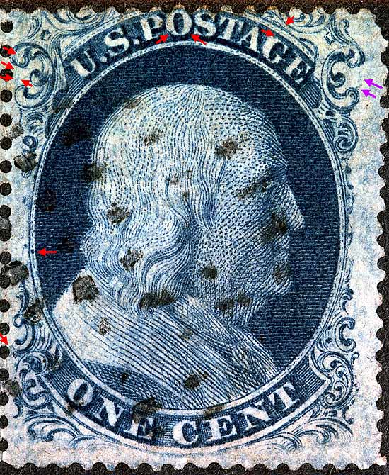
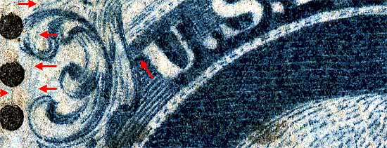
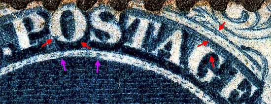
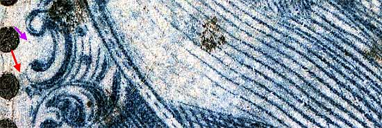

1¢ Franklin Issue of 1851-1861, PLATE 12 Pos 35R12 (Scott #20) |
| Scott #20 Blue, Type II, Relief B Only Issued perforate MINOR DOUBLE TRANSFER |
|  |
| Figure 1. (Below) The strong plate scratches or lines of color can be seen cutting thru Ornaments A/B. Slight DOUBLE TRANSFERING can be seen in the dashed lines above the "U" of US.
 |
| Figure 2. (Below) Plating marks as shown in the Neinken plating diagrams. Slight DOUBLE TRANSFERING can be seen in the dashed lines below the O and S. The curl in the G cannot be seen clearly in this copy.
 |
| Figure 3. (Below) The Neinken plating diagrams indicate 3 dots of color to the left of Ornament F. These cannot be seen on this copy.
 |
DISCLAIMER and COPYRIGHT INFORMATION: Thanks for visiting this site. I hope you learn something new as we are making new discoveries all the time. You, the visitor, have my permission to link to my pages and to share the INFORMATION with others. The images themselves fall under the fair use guidelines established by the United States Congress and Copyright law. Basically contact us before using. I also ask in return that you send me an e-mail if I have made a mistake, or have made some other technical blunder that in my rush to put these pages up would cause the visitor confusion. Please also visit my other website at www.slingshotvenus.com. and support the live music arts. While your there, be sure to purchase our music. There are not many philatelic rock stars around and we need all the help we can get. :-) I can be reached at: nerdman@ix.netcom.com UPDATE: 11/18/06 |